|
Cuaderno técnico II: Trucaje de los servos Futaba 3003 |
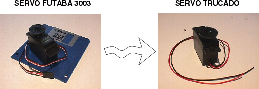
Para la construcción de robots móbiles es necesario disponer de motores que hagan girar las ruedas del robot. Se pueden usar de dos tipos: paso a paso o de corriente continua. En este cuaderno técnico nos centraremos en los segundos.
Los motores de corriente contínua (Motores CC) son muy fáciles de controlar. Disponen de dos cables donde se aplica un voltaje. A mayor voltaje mayor velocidad, y la polaridad aplicada determina el sentido de giro. Si tomamos un motor de este tipo y lo conectamos directamente a una pila veremos que empieza a moverse.
El problema es que giran muy rápido y tienen poca fuerza, lo que los hace poco adecuados para la construcción de robots móviles destinados al aprendizaje, donde queremos que se muevan lentamente sobre una superficie pequeña, como la de una mesa. Es necesario utilizar una caja reductora con un eje de salida que gira más lentamente, pero con mayor fuerza.
Construir la caja reductora es complicado y las que se pueden comprar son caras. En este cuaderno técnico describimos una solución muy empleada en la construcción de robots móviles: la utilización de servos trucados. Los servos incorporan un motor CC, una caja reductora y un circuito de control y sirven para la construcción de articulaciones. Tienen un rango de giro limitado a 180 grados. Es posible "trucar" estos servos, eliminando el circuito de control y cortando los topes mecánicos de manera que se comporten como motores de CC normales, pero con mucha fuerza. Perfectos para hacer pequeños robots móviles.
Por ejemplo, el Microbot Tritt utiliza este tipo de motores.
En la foto de la izquierda se pueden dos servos recién comprados. Además del propio servo, incluyen tornillos y diferentes coronas que se colocan en el eje de salida. En la foto de la derecha se muestra un servo junto a un disco de 3 y 1/2 ", para apreciar su tamaño. Obsérvese el conector que tiene, que incluye tres cables: dos para la alimentación (rojo y negro) y otro para la señal de control (blanco). Una vez trucado sólo tendrá dos cables
|
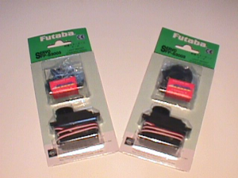 |
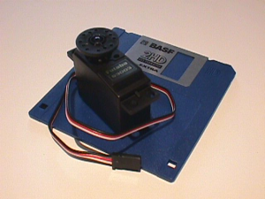 |
|
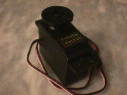 |
Paso 1. Hay aplicaciones con microbots que necesitan un giro completo de los motores. Ya se ha visto que los servomecanismos tienen un giro de 180 grados. Esta limitación viene impuesta por unos topes mecánicos y un circuito electrónico. Todo esto se puede anular para conseguir el giro completo buscado, pero es un proceso destructivo, es decir, no se podrá recuperar la funcionalidad original. |
|
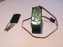 |
Paso 2. Al quitar los cuatro tornillos posteriores se aprecia un circuito electrónico. Para poder extraerlo es necesario quitar el tornillo que une la rueda con el eje del motor. Una vez hecho esto se puede quitar la tapa superior del servomecanismo, dejando al descubierto unos engranajes blancos. |
|
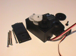 |
Paso 3. Los engranajes blancos que se pueden apreciar en esta figura forman la caja reductora del servomecanismo. La misión de esta es proporcionar más par (fuerza) de salida en el eje del motor y reducir la velocidad del mismo. Para quitar el circuito electrónico se tiene que desmontar primero la caja reductora. Con mucho cuidado para no perder las piezas se irán quitando las pequeñas ruedas dentadas blancas. Atención con el pequeño eje situado en las dos ruedas intermedias. |
|
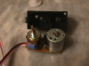 |
Paso 4. Una vez hecho lo anterior se puede presionar con un destornillador el saliente mecánico que se esconde debajo del engranaje más grande (eje de salida). Se observará cómo el circuito electrónico sobresale por debajo. Ahora se puede hacer palanca para extraerlo entero. En la figura se muestra la apariencia de ese circuito electrónico una vez extraído. Hay dos cilindros y un circuito integrado. Uno es el potenciómetro de control (en la figura a la izquierda), el otro es el motor (En la figura a la derecha). |
|
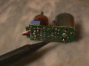 |
Paso 5. Ha llegado el momento de empezar a transformar el servomecanismo. Hasta ahora el proceso no ha sido destructivo, pero a partir de aquí sí lo será. Lo primero que hay que hacer es desoldar el motor, será la única parte que se reutilice, el resto no se va a necesitar. El potenciómetro establece junto con el chip la limitación de giro electrónica. Al quitar ambos componentes se elimina dicha limitación. |
|
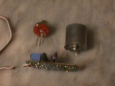 |
Paso 6. El cable triple que sale del circuito electrónico se puede cortar para utilizarlo en otras aplicaciones. Es muy útil debido al conector triple que tiene en su extremo. Por ejemplo se puede usar para conectar los sensores de infrarrojos a la tarjeta CT293+. En la figura se observa el circuito totalmente desmontado. El potenciómetro se puede reutilizar en otras aplicaciones, por eso no viene mal guardarlo, nunca se sabe. |
|
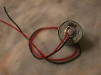 |
Paso 7. Antes de volver a colocar el motor en su sitio se deben soldar dos cablecillos en sus bornas de alimentación. Se recomienda usar un cable rojo y otro negro, el primero se soldará a la borna positiva (la que tiene el punto rojo) y el segundo a la negativa. La diferenciación no importa en el caso de microbots móviles, pero en aplicaciones que impliquen un solo sentido de giro del motor sí. Conviene hacer coincidir la polaridad de la fuente de alimentación con la del motor, de esa forma la vida útil del mismo será mayor. |
|
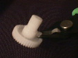 |
Paso 8. Ahora se elimina la limitación mecánica. Esta consiste en un pequeño saliente situado en el engranaje que forma el eje de salida del servomecanismo. En la figura se puede apreciar dicho engranaje y la situación del saliente. Para cortarlo se pueden emplear unas pinzas, lima, etc... lo importante es no dañar las muescas de la rueda dentada, o peor aún partir el eje. En caso de que esto ocurra se puede intentar pegar con 'Super Glue 3'. |
|
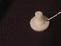 |
Paso 9. Una vez eliminado el saliente se recomienda limar la zona para que no queden rugosidades, es decir que parezca que nunca hubo un saliente. La razón es evitar rozamientos innecesarios una vez montada la reductora. Cuantos más rozamientos más ruido y más pérdida de energía mecánica. |
|
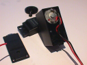 |
Paso 10. Una vez realizado lo anterior se procede a montar el servomecanismo. Lo primero es introducir el motor en el hueco cilíndrico que hay en el interior de la carcasa negra, es decir del lugar de dónde salió. |
|
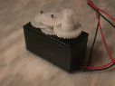 |
Paso 11. Una vez introducido se monta la caja reductora, para ello fijarse en la figura, sobretodo tener cuidado con la posición que deben tener los engranajes y nunca forzar su colocación. La tapa superior debe entrar sin ningún problema, en caso contrario revisar los engranajes. |
|
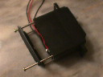 |
Paso 12. Por último se atornilla la tapa inferior, pero antes conviene hacer un pequeño nudo en los cablecillos del motor, y dejar dicho nudo en el interior. Este protegerá las soldaduras hechas al motor cuando se produzcan tirones en los cablecillos. |
|
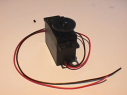 |
Paso 13. En la figura se aprecia el aspecto del servomecanismo trucado. La primera diferencia respecto al principio está en el cable de conexión, ahora no es triple sino doble. Pero la más importante es que ahora puede girar contínuamente, es decir giros completos de 360 grados. Llegado a este punto se tendrán preparados los motores del microbot y se podrá abordar la construcción de la estructura mecánica. |
En la siguiente figura se pueden apreciar con más detalle el conjunto de engranajes que forman la caja reductora del servo Futaba 3003. En total hay 4. El que está conectado al eje de salida del servo es el que tiene el tope a eliminar. En algunos servos es de color negro (como en este caso) pero en otros es blanco (fotos anteriores).
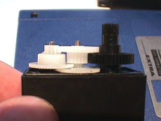
Este documento se distribuye bajo licencia FDL por lo que se permite su copia, modificación y distribución, siempre y cuando se mantenga esta nota.
|
Cuaderno técnico II |
|
microbot.pdf (409KB) |
Construcción de Tritt. Información sobre los Futaba, Trucado de los servos y estructura ALF I |
|
microbot-tritt.tgz(865KB) |
Fuentes del documento microbot, para Lyx. (Incluye todas las fotos) |
¿Quieres participar? A continuación proponemos una serie de cosas que quedan por hacer. Si has realizado alguna de ellas y quieres que te la publiquemos sólo tienes que mandarnos un correo.
Planos de las distintas partes del Futaba (engranajes, motor, etc...), usando el programa libre y multiplataforma QCAD, para poder compartir los planos con cualquiera
Modelos virtuales de las distintas piezas, usando el programa libre y multiplataforma Blender
Tarjeta Skypic, entrenadora para los microcontroladores PIC de 28 pines
Tarjeta CT6811 , basada en el microcontrolador 68hc11 de Motorola
Tarjeta CT293, para el control de motores y sensores
Tarjeta PICMIN , tarjeta básica para comenzar a trabajar con el microcontrolador PIC 16F84
Placa FastPic, Tarjeta de desarrollo para microcontroladores PIC 16F876 ,18F258 y pin compatibles.
5/Sep/2004:
Añadido enlace al índice de cuadernos técnicos
Añadido enlace a la Tarjeta Skypic
28/Jul/2003: Publicado en la web